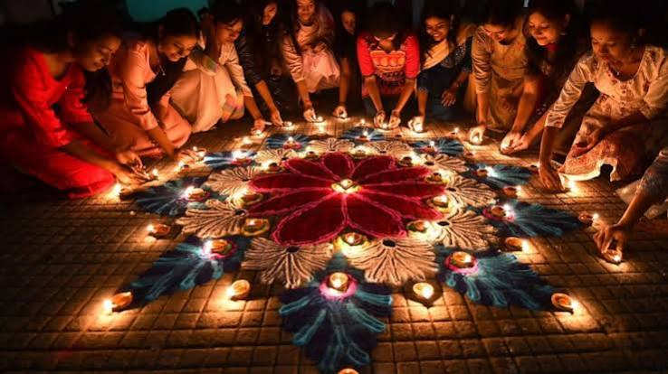

Diwali is the major Hindu festival of lights, symbolizing the victory of light over darkness and good over evil. The five-day festival runs from November 6 to November 10, 2026,the major Hindu festival of lights, symbolizing the victory of light over darkness and good over evil. The five-day festival runs from November 6 to November 10